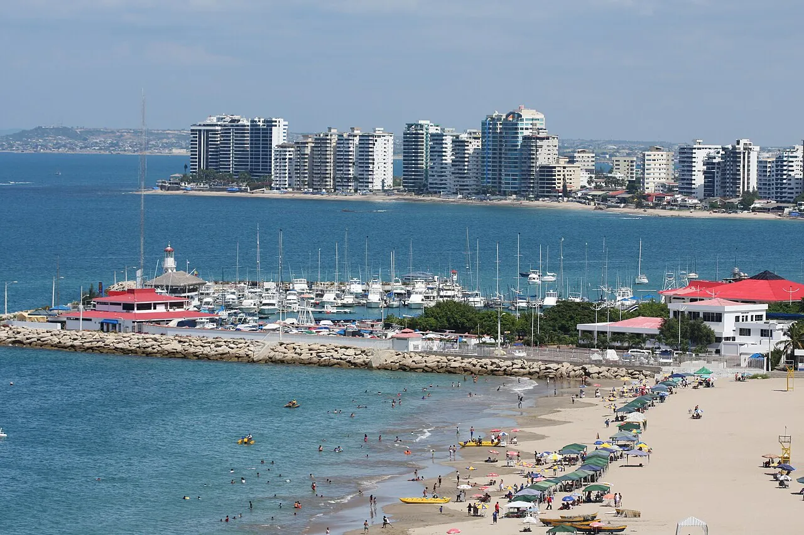

Salinas
Santa Elena, Équateur · surf, kitesurf

Station balnéaire au point le plus à l’ouest de l’Équateur, avec des reefs et un vent régulier.
- Lieu
- Santa Elena, Équateur
- Niveau
- Intermédiaire
- Activités
- surf, kitesurf
- Type d'eau
- Mer / océan
- Coordonnées
- -2.20, -80.98 (position approximative du secteur)
Dangers à connaître
- Récifs.
- Vent l’après-midi.
Le conseil d'Ocean Buddy
Le vent est au rendez-vous surtout de juin à décembre.
Ouvrir dans Ocean Buddy Télécharger sur l'App Store
Source : Fiche Ocean Buddy · septembre 2026 · à vérifier localement.